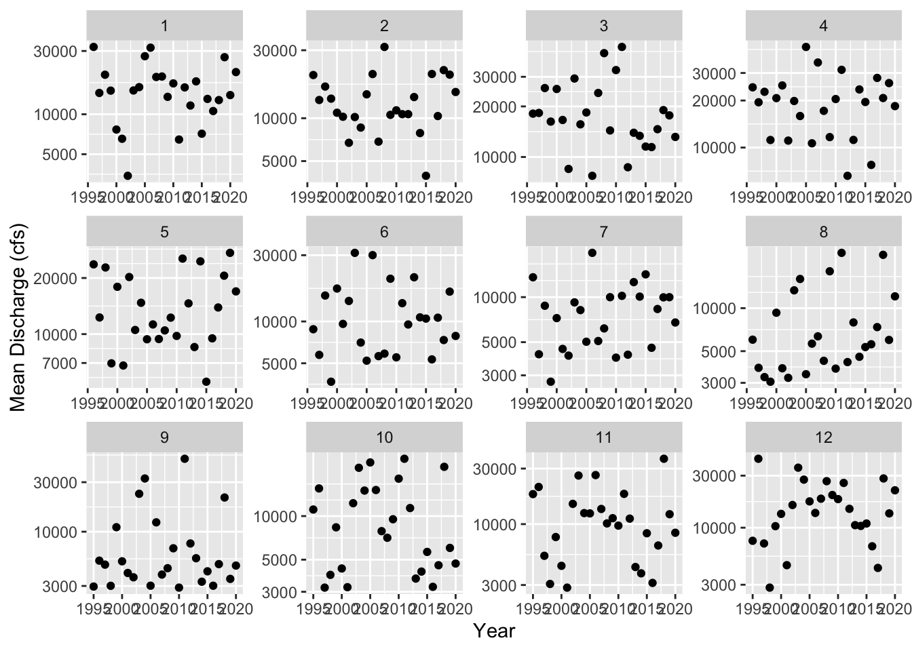
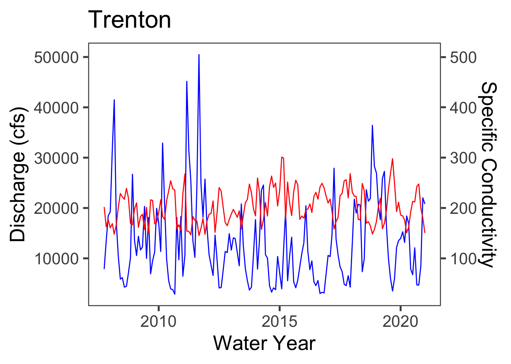

3 Results
3.1 Data
site_no1 <- "01463500"
q1 <- readNWISdv(siteNumbers = site_no1,
parameterCd = '00060',
startDate = '1995-09-30',
endDate = '2021-01-01') %>%
rename(q_cfs = X_00060_00003) %>%
addWaterYear(.) %>%
select(-agency_cd, -X_00060_00003_cd)
head(q1)3.2 Monthly averages Trenton
q_month_means <- q1 %>%
mutate(month = month(Date),
year = year(Date)) %>%
group_by(year, month) %>%
summarize(q_mean = mean(q_cfs, na.rm = T),
q_min = min(q_cfs, na.rm = T),
q_median = median(q_cfs))
head(q_month_means)3.3 September Trends
q_sept <- q_month_means %>%
filter(month == 9)
ggplot(q_sept, aes(x = year, y = q_mean)) +
geom_point() +
scale_y_log10()+
ylab('Q (cfs)') +
xlab('Water Year')3.4 Mann-Kendall Test
mk.test(log10(q_sept$q_mean))
sens.slope(log10(q_sept$q_mean))
#1 cfs per year
sens.slope((q_sept$q_mean))There does not seem to be a specific trend for the month of September at this site on the Delaware River. It does look like the best fit line would be a straight line around 225 cfs, with some outliers that are either much higher or lower. The reason for there not being much of a trend here is due to how large the Delaware River is, making it difficult for it to be affected by anything. p=0.8948
3.5 August Trends
q_aug <- q_month_means %>%
filter(month == 8)
ggplot(q_aug, aes(x = year, y = q_mean)) +
geom_point() +
scale_y_log10()+
ylab('Q (cfs)') +
xlab('Water Year')3.6 Minimum and Median Q Plot
#Mean
ggplot(q_month_means, aes(x = year, y = q_mean)) +
geom_point() +
facet_wrap(~month, scales = 'free') +
scale_y_log10()
#Minimum
ggplot(q_month_means, aes(x = year, y = q_min)) +
geom_point() +
facet_wrap(~month, scales = 'free') +
scale_y_log10()#Median
ggplot(q_month_means, aes(x = year, y = q_median)) +
geom_point() +
facet_wrap(~month, scales = 'free') +
scale_y_log10()
At this site in the Delaware River at Trenton, there are not many trends that can be seen over the months. For the mean, the values are all over the place and the only kind of trends would be straight lines with outliers. For the minimum values, the data seems to be a little more consise than with the mean values. So it would be easier to put a trend line in, but it is still all over the place where I can’t say whether the values are increasing or decreasing. For the median values, they are also all over the place like with the mean values. In March, April, and September there is a slight increasing trend that can be seen. The rest have no trends due to the Delaware River being so large.
3.7 Specific Conductivity Trends
3.7.1 01463500 - Trenton
site_no1 <- "01463500"
Spec_Cond1 <- read.csv('data/spefcond1.csv')
sc1 <- readNWISuv(siteNumbers = site_no1,
parameterCd = '00095',
startDate = '1995-09-30',
endDate = '2021-01-01') %>%
rename(sc_um = X_00095_00000) %>%
addWaterYear(.) %>%
select(-agency_cd, -X_00095_00000_cd)
sc_mean_t <- sc1 %>%
mutate(month = month(dateTime),
year = year(dateTime)) %>%
group_by(year, month) %>%
summarize(sc_mean1 = mean(sc_um, na.rm = T),
sc_min1 = min(sc_um, na.rm = T),
sc_median1 = median(sc_um))
ggplot(sc_mean_t, aes(x = year, y = sc_mean1)) +
geom_point() +
facet_wrap(~month, scales = 'free') +
scale_y_log10()The specific conductance data also does not show much of a trend throughout the year. However, if you look at them closely, most do seem to have a slight increase in their values.
3.7.2 01482100 - Del Mem Bridge at Willmington
site_no2 <- "01482100"
Spec_Cond2 <- read.csv('data/spefcond2.csv')
sc2 <- readNWISuv(siteNumbers = site_no2,
parameterCd = '00095') %>%
mutate(dateTime = lubridate::as_datetime(dateTime),
date = lubridate::as_date(dateTime))%>%
group_by(site_no, dateTime)%>%
summarize(sc_um_min_2 = min(X_Lower.Sensor_00095_00000),
sc_um_mean_2 = mean(X_Lower.Sensor_00095_00000),
sc_um_max_2 = max(X_Lower.Sensor_00095_00000))
sc_mean_dm <- sc2 %>%
mutate(month = month(dateTime),
year = year(dateTime)) %>%
group_by(year, month) %>%
summarize(sc_mean2 = mean(sc_um_mean_2, na.rm = T),
sc_min2 = min(sc_um_min_2, na.rm = T),
sc_max2 = max(sc_um_max_2))
ggplot(sc_mean_dm, aes(x = year, y = sc_mean2)) +
geom_point() +
facet_wrap(~month, scales = 'free') +
scale_y_log10()
3.7.3 01412350 - Ship John Shaol Lighthouse
site_no3 <- "01412350"
Spec_Cond3 <- read.csv('data/spefcond3.csv')
sc3 <- readNWISuv(siteNumbers = site_no3,
parameterCd = '00095',
startDate = '2021-03-01',
endDate = '2022-04-07') %>%
rename(sc_um_3 = X_Lower_00095_00000) %>%
addWaterYear(.) %>%
select(-agency_cd, -X_Upper_00095_00000_cd, -X_Upper_00095_00000,
-X_Lower_00095_00000_cd, -tz_cd)
sc_mean_sj <- sc3 %>%
mutate(month = month(dateTime),
year = year(dateTime)) %>%
group_by(year, month) %>%
summarize(sc_mean3 = mean(sc_um_3, na.rm = T),
sc_min3 = min(sc_um_3, na.rm = T),
sc_max3 = max(sc_um_3))
ggplot(sc_mean_sj, aes(x = year, y = sc_mean3)) +
geom_point() +
facet_wrap(~month, scales = 'free') +
scale_y_log10()
##Discharge vs. Specific Conductivity Trends
#trenton q vs. sc
q_month_means <- q_month_means %>%
mutate(day =1)
q_month_means$Date <- as.Date(with(q_month_means, paste(year, month, day, sep= "-")), '%Y-%m-%d')
sc_mean_t <- sc_mean_t %>%
mutate(day = 1)
sc_mean_t$Date <- as.Date(with(sc_mean_t, paste(year, month, day, sep= "-")), '%Y-%m-%d')
q_sc_t <- right_join(q_month_means, sc_mean_t, by = 'Date')
p1 <- ggplot(q_sc_t) +
geom_line(aes(x = Date, y = q_mean), color ="blue") +
geom_line(aes(x = Date, y = sc_mean1*100), color = "red")+
xlab('Water Year')+
scale_y_log10()+
ylab('Q') +
theme_classic()
p1 + scale_y_continuous(name = "Discharge", sec.axis = sec_axis(trans =~. / 100, name= "Specific Conductivity"))+
theme_few(base_size =20)+
scale_color_identity(guide = "legend")+
ggtitle("Trenton")
p1#site 2 and 3 sc
sc_mean_dm <- sc_mean_dm %>%
mutate(day = 1)
sc_mean_dm$Date <- as.Date(with(sc_mean_dm, paste(year, month, day, sep= "-")),
'%Y-%m-%d')
sc_mean_sj <- sc_mean_sj %>%
mutate(day = 1)
sc_mean_sj$Date <- as.Date(with(sc_mean_sj, paste(year, month, day, sep= "-")),
'%Y-%m-%d')
sc_dm_sj <- right_join(sc_mean_dm, sc_mean_sj, by ='Date')
ggplot(sc_dm_sj) +
geom_line(aes(x = Date, y = sc_mean2), color = "orange")+
geom_line(aes(x = Date, y = sc_mean3), color = "green")+
scale_y_log10()+
ylab('SC') +
xlab('Water Year')+
theme_classic()+
scale_color_identity(guide = "legend")